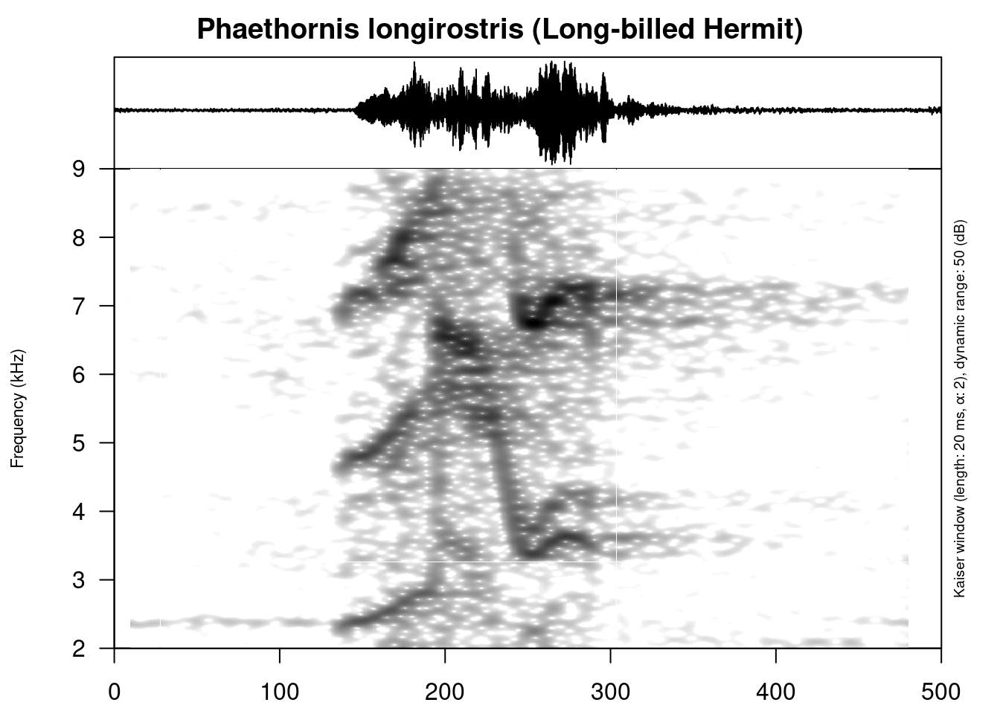
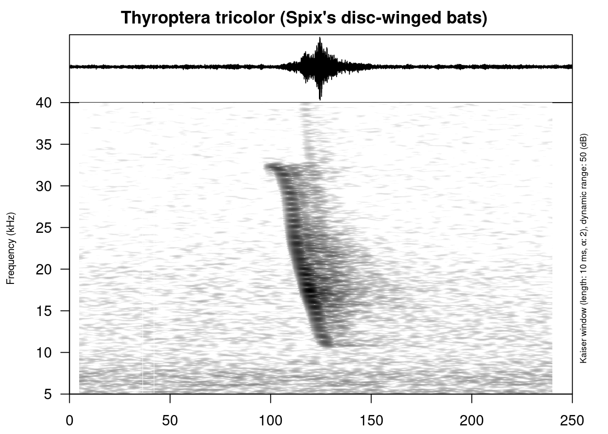
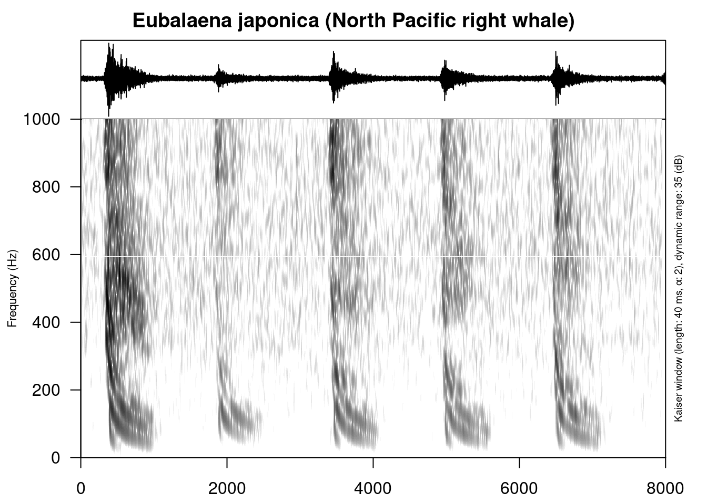
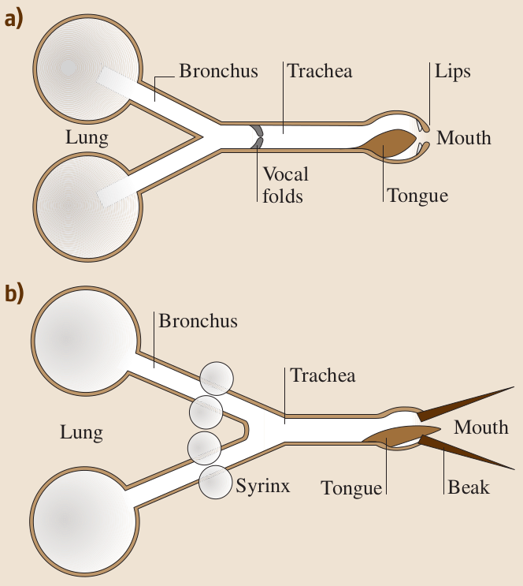

2 Animal bioacoustics based on (Fletcher 2007)
Bioacoustics — is a subbranch of biology focused on sound production, dispersion and reception in animals (including humans).
2.1 Some facts
- there is a relation between mass and frequency range:

However some animals use tricks, e. g. koala males have an extra set of vocal cords that are 15 times wider than normal and females prefer males with the lowest voices. (see Earthsounds, e. 1, 23:00)
- patterns are simpler than human
- patterns could be really fast

- patterns could be really slow

- some animals use some tricks!
BBC, Earth’s tropical Island – Borneo (20:47), see here
- animals adapt their frequency range to environment and to each other (environment pollution, listen to NPR Invisibilia’s episode The Last Sound)
2.2 Hearing and Sound Production
- Hearing is surprisingly similar (but see this video by TED-Ed)
- Sound production of breathing animals:
- non-aquatic mammals
- exhalation through valve
- aquatic mammals
- moving are from one reservoir to another through the oscillating valve
- non-aquatic mammals
- Sound production of non-breathing animals:
- muscle-driven mechanical vibrations
2.3 Vibrational Communication
- some animals communicate through vibration
- some animals do both: Владимир Динец (2015) Песни драконов
2.4 Insects
- external sensory hairs
- ribbed file on their legs, or wings
- some crickets have evolved the strategy of digging a horn-shaped burrow in the earth
- Tenrecs!
2.5 Land Vertebrates
 Why can parrots talk? - Grace Smith-Vidaurre and Tim Wright
2.5.1 Land vertebrates
- Some animals adjust their vocal system so that the frequency of the vocal valve closely matches a major resonance of the upper vocal tract, usually that of lowest frequency but not necessarily so. Some species of frogs and birds achieve this by the incorporation of an inflatable sac in the upper vocal tract. (cf. air sacs in apes, e. g. (Hewitt, MacLarnon, and Jones 2002))
- Some animals change their frequency range according to environment
- In most mammals and other large animals the auditory canal joining the two ears in birds and reptiles has generally degenerated in mammals to the extent that each ear functions nearly independently.
2.6 Birds
- Song birds have a syrinx consisting of dual inflated-membrane valves. These valves can be operated simultaneously and sometimes at different frequencies (see overtone singing), but more usually separately, and produce a pulsating air-flow rich in harmonics.
- Some birds have developed the ability to mimic others around them
BTW: here is the database of bird sounds
2.7 Bats
- echo-location (cf. blind or visually impaired people)
- short calls
- huge range 40-80 kHz
- sound emitted through the nose rather than the mouth
2.8 Aquatic Animals
- crustaceans – like insects – produce sound by rubbing a toothed leg-file against one of the plates covering their body
- fish species with swim-bladder – like other insects – membrane over the bladder, that oscilates by muscular effort
- different system of hearing (hair-cells, otolith)
BTW: check out a Hydrophone
Fletcher, N. 2007. “Animal Bioacoustics.” In Springer Handbook of Acoustics, edited by Thomas D. Rossing, 785–804. New York: Springer.
Hewitt, Gwen, Ann MacLarnon, and Kate E Jones. 2002. “The Functions of Laryngeal Air Sacs in Primates: A New Hypothesis.” Folia Primatologica 73 (2-3): 70–94.